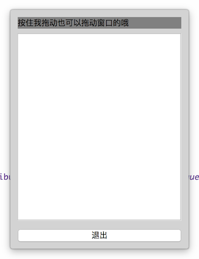

程序窗口的边框，标题栏等是系统管理的，Qt 不能对其进行定制，为了实现定制的边框、标题栏、关闭按钮等，需要把系统默认的边框、标题栏去掉，然后使用 Widget 来模拟它们。这里介绍使用 QSS + QGraphicsDropShadowEffect 来创建圆角、无边框、有阴影、可拖动的窗口。
核心技术要点:
使用方法:
FramelessWindow *window = new FramelessWindow(yourWidget) 即可
效果如图:

main.cpp
1
2
3
4
5
6
7
8
9
10
11
12
13
14
15
16
17
18
19
20
21
22
23
24
25
26
27
28
29
30
31
32
33
34
35
36
37
| #include "FramelessWindow.h"
#include <QDebug>
#include <QApplication>
#include <QWidget>
#include <QLabel>
#include <QPushButton>
#include <QTextEdit>
#include <QVBoxLayout>
int main(int argc, char *argv[]) {
QApplication app(argc, argv);
QPushButton *quitButton = new QPushButton("退出");
QVBoxLayout *layout = new QVBoxLayout();
layout->addWidget(new QLabel("按住我拖动也可以拖动窗口的哦"));
layout->addWidget(new QTextEdit());
layout->addWidget(quitButton);
QWidget *contentWidget = new QWidget();
contentWidget->setLayout(layout);
contentWidget->setObjectName("contentWidget");
contentWidget->setStyleSheet("#contentWidget{background: lightgray; border-radius: 4px;}"
".QLabel{background: gray;}.QTextEdit{background: white;}");
QObject::connect(quitButton, &QPushButton::clicked, [&app] {
app.quit();
});
FramelessWindow *window = new FramelessWindow(contentWidget);
window->resize(300, 400);
window->show();
return app.exec();
}
|
FramelessWindow.h
1
2
3
4
5
6
7
8
9
10
11
12
13
14
15
16
17
18
19
20
21
22
23
| #ifndef FRAMELESSWINDOW_H
#define FRAMELESSWINDOW_H
#include <QWidget>
struct FramelessWindowPrivate;
class FramelessWindow : public QWidget {
Q_OBJECT
public:
explicit FramelessWindow(QWidget *contentWidget, QWidget *parent = 0);
~FramelessWindow();
protected:
void mousePressEvent(QMouseEvent *e) Q_DECL_OVERRIDE;
void mouseReleaseEvent(QMouseEvent *e) Q_DECL_OVERRIDE;
void mouseMoveEvent(QMouseEvent *e) Q_DECL_OVERRIDE;
private:
FramelessWindowPrivate *d;
};
#endif
|
FramelessWindow.cpp
1
2
3
4
5
6
7
8
9
10
11
12
13
14
15
16
17
18
19
20
21
22
23
24
25
26
27
28
29
30
31
32
33
34
35
36
37
38
39
40
41
42
43
44
45
46
47
48
49
50
51
52
53
54
55
56
57
| #include "FramelessWindow.h"
#include <QMouseEvent>
#include <QGridLayout>
#include <QGraphicsDropShadowEffect>
struct FramelessWindowPrivate {
FramelessWindowPrivate(QWidget *contentWidget) : contentWidget(contentWidget) {}
QWidget *contentWidget;
QPoint mousePressedPosition;
QPoint windowPositionAsDrag;
};
FramelessWindow::FramelessWindow(QWidget *contentWidget, QWidget *parent) : QWidget(parent) {
setWindowFlags(Qt::FramelessWindowHint);
setAttribute(Qt::WA_TranslucentBackground);
d = new FramelessWindowPrivate(contentWidget);
QGraphicsDropShadowEffect *shadowEffect = new QGraphicsDropShadowEffect(contentWidget);
shadowEffect->setColor(Qt::lightGray);
shadowEffect->setBlurRadius(4);
shadowEffect->setOffset(0, 0);
contentWidget->setGraphicsEffect(shadowEffect);
QGridLayout *lo = new QGridLayout();
lo->addWidget(contentWidget, 0, 0);
lo->setContentsMargins(4, 4, 4, 4);
setLayout(lo);
}
FramelessWindow::~FramelessWindow() {
delete d;
}
void FramelessWindow::mousePressEvent(QMouseEvent *e) {
d->mousePressedPosition = e->globalPos();
d->windowPositionAsDrag = pos();
}
void FramelessWindow::mouseReleaseEvent(QMouseEvent *e) {
Q_UNUSED(e)
d->mousePressedPosition = QPoint();
}
void FramelessWindow::mouseMoveEvent(QMouseEvent *e) {
if (!d->mousePressedPosition.isNull()) {
QPoint delta = e->globalPos() - d->mousePressedPosition;
move(d->windowPositionAsDrag + delta);
}
}
|
思考
还可以使用其他方式实现上面的功能，并且功能也不够丰富，思考下面的问题:
- 使用其他方式实现圆角、阴影，例如:
- 绘图
- 绘制圆角矩形并且实现阴影的算法
- 使用一个圆角带阴影图片，利用九宫格技术绘制(border-image 的原理)
- QSS 的
border-image
- 拖动调整无边框窗口的大小
- 添加标题栏
- 添加最小化、最大化、关闭按钮